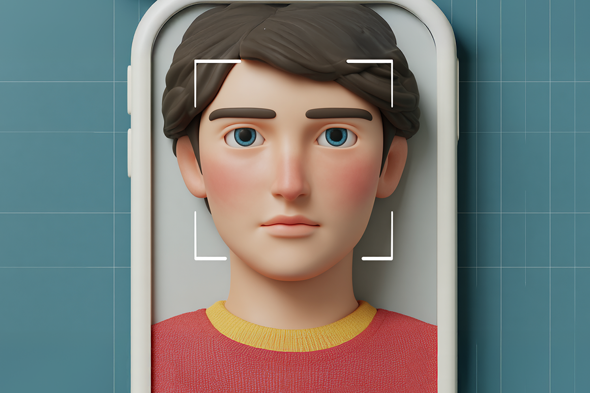
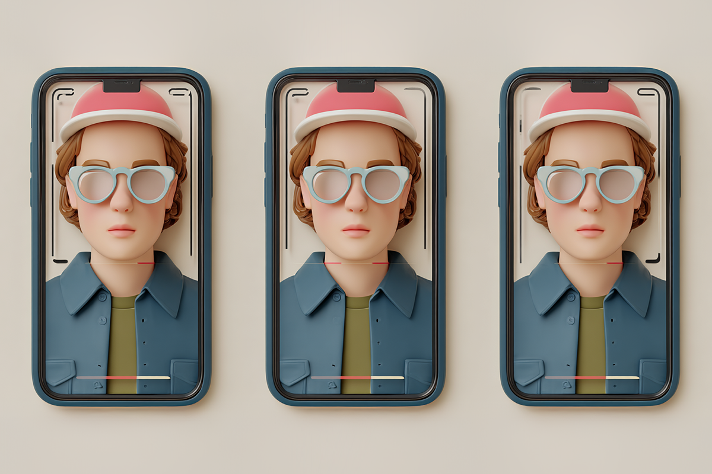
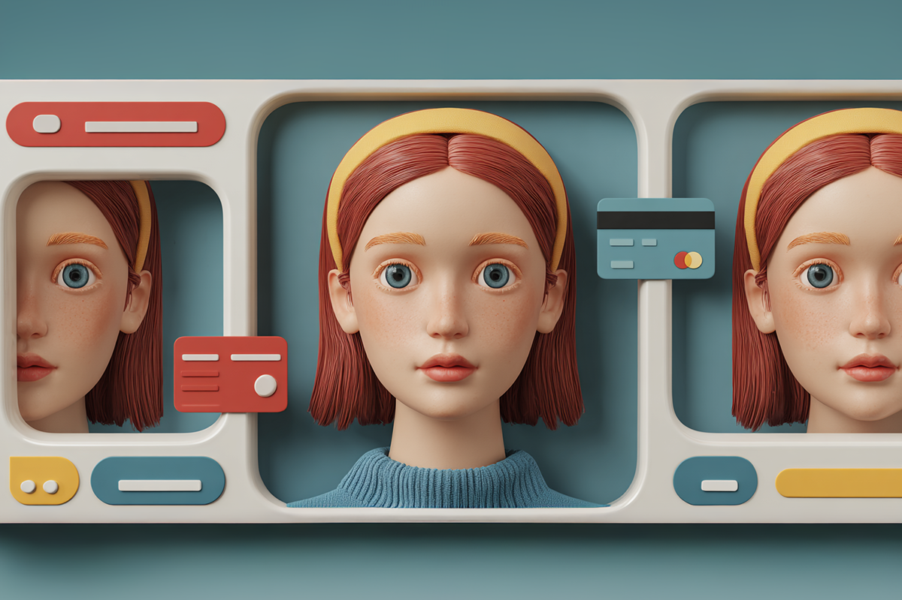

Tu cara es tu contraseña: biometría everywhere
De memorizar claves imposibles a pagar con tu cara.
De memorizar claves imposibles a pagar con tu cara.

Hace no tanto tiempo, autorizar una transferencia era una prueba de estrés: recordar la clave, no equivocarte 3 veces, rezar por un SMS que nunca llegaba… Pero hoy, basta con poner tu cara frente al celular. Parpadeas y listo.
Es que la biometría llegó tan rápido a Chile que casi ni la cuestionamos. Pasamos del PIN eterno a posar para el banco con “expresión neutra”.

El cambio no fue una moda: los fraudes digitales explotaron y los bancos tuvieron que reaccionar. De ahí que tu rostro, tu huella o incluso tu voz, ahora sean la llave de tus apps bancarias. MACH, Tenpo y Mercado Pago siguieron ese camino: si no eres tú, la transacción no pasa. Nuestra identidad física se transformó en nuestra contraseña más importante y en la más imposible de cambiar.

La parte realmente fascinante (y un poco aterradora también, hay que admitirlo) es que la inteligencia artificial no solo reconoce tu cara: la analiza a nivel microscópico. Detecta profundidad, textura, microexpresiones y movimientos naturales. ¿El motivo? Evitar que alguien suplante tu identidad.
No es raro que pronto te aparezca (o ya hayas visto) en redes sociales el “remix” de Somebody That I Used to Know de Gotye, pero con Freddy Mercury, Eminem, Snoop Dog, Elvis Presley y más íconos de la música. Y es tan real, que da escalofríos de ver y escuchar el videoclip. Pero también existen videos donde famosos hablan en otros idiomas, los memes se vuelven más bizarros e incluso unos donde encuentras a celebridades como Ariana Grande atendiendo en un McDonald’s.
Por eso ahora estamos en una batalla silenciosa: IA que intenta copiarte vs. IA que intenta desenmascararla.

Que sea cómodo no significa que sea infalible. Y como tu cara hoy abre tu banco, tu billetera digital y tus pagos, proteger esa identidad es parte real de tu seguridad financiera. Y no es paranoia: es sentido común versión 2026.
Aunque la tecnología nos hace las cosas más fáciles y rápidas, tenemos que estar atentos: saber qué permisos damos, dónde dejamos nuestra biometría y cómo se resguarda. Al final, el principio es el mismo para cualquier decisión importante: informarse, comparar y elegir lo que realmente te protege.
Si tu cara es tu contraseña, tú decides dónde usarla.
 Tecnología
TecnologíaSi eres como yo y revisas TikTok e Instagram constantemente, te habrás dado cuenta de que estas redes son casi como un experimento social.
 Tecnología
TecnologíaHablamos mucho de inteligencia artificial. La tenemos integrada en nuestra vida, nos ayuda en nuestros trabajos y le preguntamos cosas de…
 Tecnología
TecnologíaDurante años hemos pensado en la inteligencia artificial como algo súper frío: servidores gigantes, computadores procesando datos y…